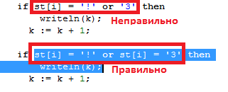

C:\Program Files (x86)\PascalABC.NET
C:\PABCWork.NET-
Pascal ABC представляет собой IDE - Intergated Development Envinronment. (Интегрированную среду разработки). IDE не обязательна для создания небольших программ.
Нам нужно скачать компилятор отсюда:
И затем можно создать программу за 3 шага:
Можно исольковать как простейшие текстовые редакторы, вроде Notepad, так и более продвинутые, вроде
Notepad++, PsPad Editor.

В настоящее время приобретают популятность продвинутые текстовые редакторы,
включающие в себя многие функции IDE, например Microsoft Visual Studio Code.
Компилятор - программа, которая переводит инструкции записанные в текстовом файле,
в инструкции машинного кода. Т.е. в нашем случае создает файл с расширением .exe
(сокращение от executable - исполняемый).
В случает работы с java - компилятор создает байткод (инструкции виртуальной машины).
В случае с pascal ABC, мы распаковали скачанный zip в:
"C:\PABCNETC\pabcnetc.exe"
Часто программы-компиляторы заканчиваются на "c":
pabcnetc
javac

В данном случае мы запускаем на выполнение просто HelloWorld (не обязательно добавлять расширение .exe).
Поскольку java выполняется на виртуальной машине, то мы запускаем программы на Java через:
java helloworld
Настройки IDE, для сохранения рабочих программ

В паскале есть так называемые (операторные скобки)
Begin и End.
Хотя спецификация языка позволяет не использовать данныее скобки в if с одним последующим выражением
Операторные скобки нужно обязательно испоьзовавать даже для однострочных выражений
Т.к. это позволяет избежать глупых ошибок при вставке дополнительного выражения
В Java правила аналогичные.

p.s. Правельный вариант - if (st[i] := '!') or (st[i] := '3) then
() - обязательны